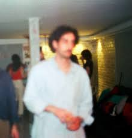
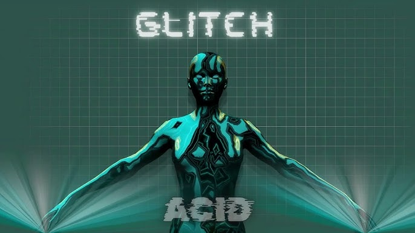

Cyber pulse
Maître des rythmes intenses et futuristes. Il propulse les foules dans un univers cyberpunk grâce à son mélange puissant d'Electro House et de Future Rave.Programmation
- 22h00 - scène principale
- 01h00 - scène principale
Découvrez les profils complets des DJ et producteurs présents lors de cette édition.

